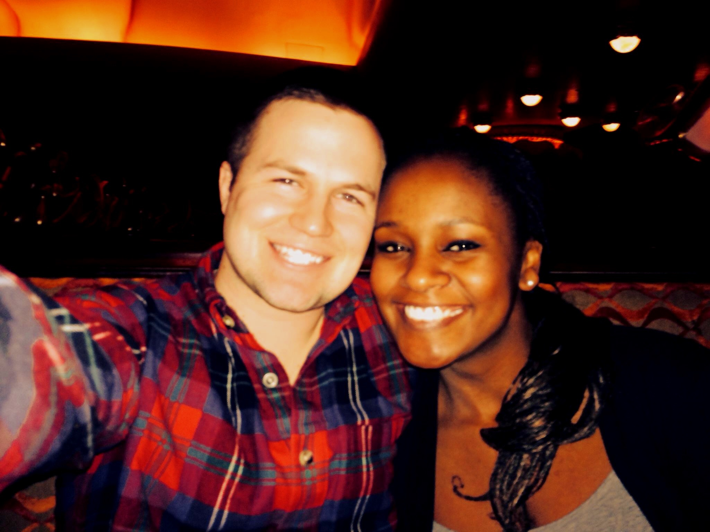

Here are all the places I've been:
This is my Kenyan Wife
Recently we traveled to Kenya
Several years ago I went caving in Nicaragua and saw a sea turtle


Here is my friend Nate Nasralla who I went with to Brazil

Ndunge and I also really like travelling in the US. Here's a picture that we took in Seattle.

In traveling, I've found that one of the most rewarding aspects of the trip is the relationship that you build with the other member or members of your group.
One of my favorite travel companions is Nate Nasralla, visible in the brazil photo, but my all time favorite partner is my wife, Ndunge. She's very addaptable which is an important trait for international travel. In addition, she spent a year in Venezuela, where she practically became a local. All this makes her a fairly sophisticated traveller and one who I love to go on adventures with
Secondly, I really enjoy outdoor activities. In Nicaragua, I explored a cave and hiked through mountains. In Brazil, I spent 4 days on a 40 kilometer trek through the Amazon jungle! And in Kenya and Zambia, I went on Safaris.
Thanks for reading my page! I hope you enjoyed learning about my travel adventures!